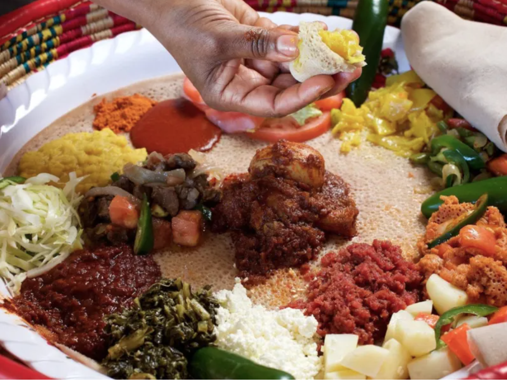
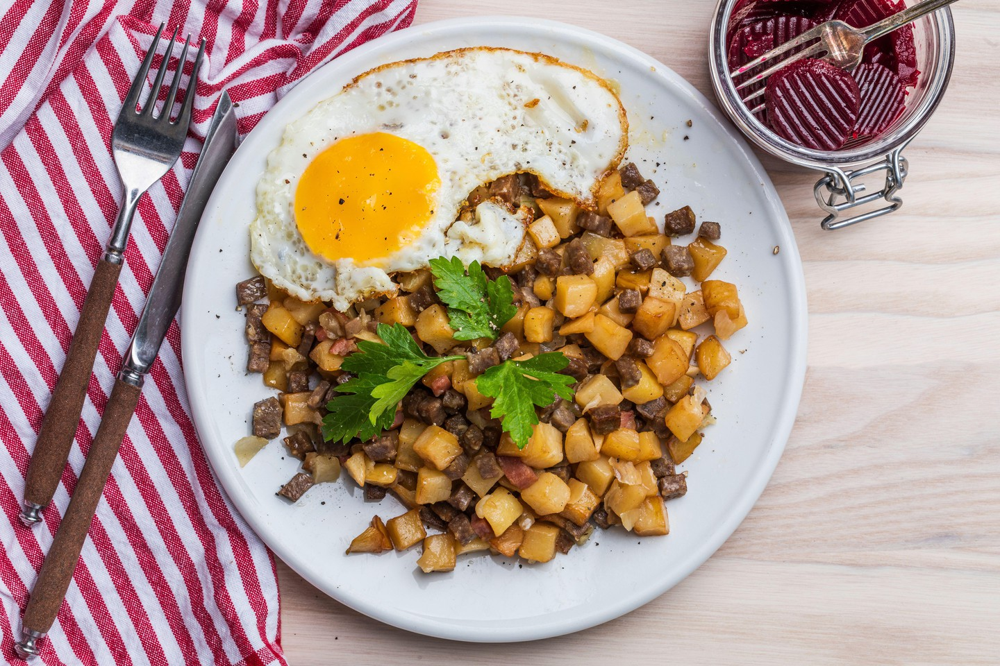
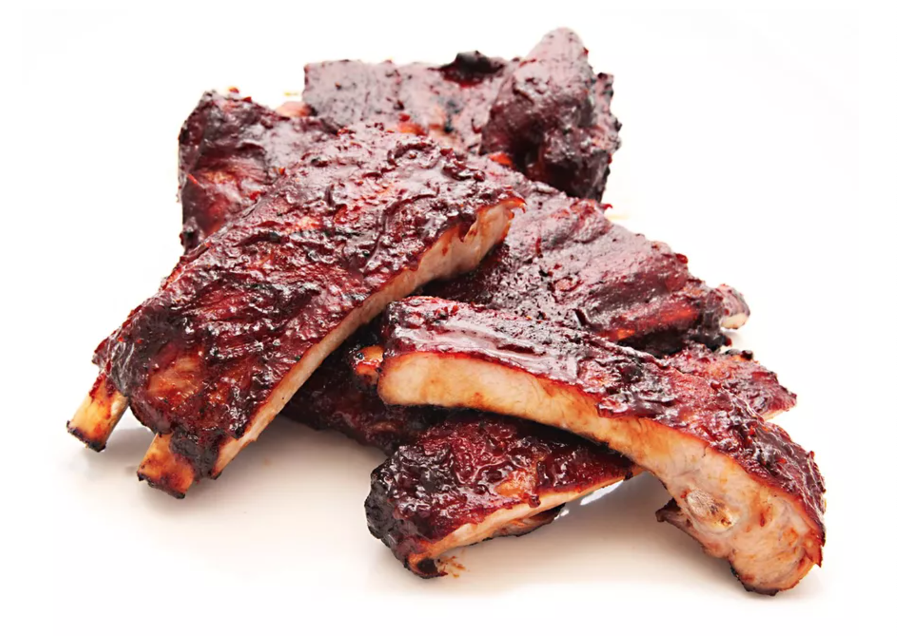

Eritrean Cuisine

Eritrea is a small east African country at the horn of Africa with cuisine that most definitely is in my favorite top 3 list. The official language is Tigrinja. (official language) and Eritrean cuisine is still a food I indulge eating at least a few times a week.
Injera is a flat bread used to scoop up varieties of veggies and meat stews. Injera is also used as the utensil by ripping a piece big enough to scoop up the dishes. Injera is made out of teff, a tiny, round grain that flourishes in the highlands of Eritrea. While teff is very nutritious, it contains practically no gluten. This makes teff ill-suited for making raised bread, however injera still takes advantage of the special properties of yeast. A short period of fermentation gives it an airy, bubbly texture, and also a slightly sour taste
Zigni consists of cubed meat (mostly beef), onions, garlic, tomatoes, and tomato paste, and it is typically flavored with berbere spice blend, salt, pepper, lemon juice, and coriander.
Pyttipanna

A traditional Swedish dish, pytt i panna translates to "small pieces in a pan." This recipe was created to use up the leftovers from the night before, which most often were meat and potatoes. The ingredients are chopped up and fried together, creating a hearty and satisfying dish that is usually enjoyed for dinner, but it can also be eaten at breakfast or brunch.
The ingredients can be flexible but traditionally it consists of bacon, cooked potato, onion, and meat ranging from cooked lamb, steak, smoked sausage or ham. To top off the dish, eggs are fried separately and placed on top of the hash.
Although pytt i panna was created to use up last night's meal, you can make this dish from scratch. By nature, the dish is flexible, depending on what you have in the fridge, so use this recipe as a guide; it calls for bacon, cooked potato, onion, and leftover meat, which are fried together in a pan. Almost any type of meat will work, including cooked lamb, steak, smoked sausage, or ham. To finish the dish, eggs are fried separately and placed on top of the hash.
BBQ Ribs

BBQ ribs are fatty, super messy and require the chef to respect the cooking process as an artform. When cooking the ribs the fat and cartilage breaks down and softens, making the ribs incredibly tender and juicy. Even though I have lived in America for more than 15 years, my first time eating Ribs was in 2021. Now, BBQ ribs is the number one item in my shopping list for every BBQ get together I have.